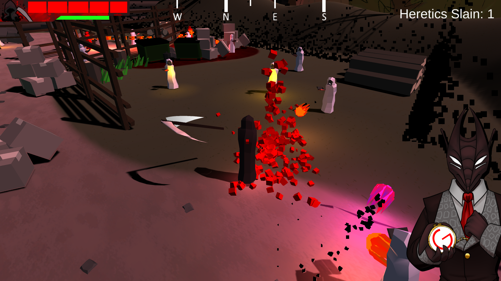
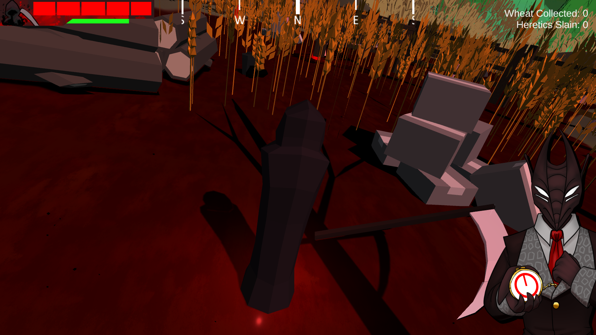

Seven Favors
You have 7 days to prove your worth.
Do you believe you are worthy?
Seven Favours is a fast paced hack-n-slash game developed for Ludum Dare 52 by myself,
Nikita Vychuzhanin and WitchGirlfriend.
Developed over the course of 3 days, with the theme being 'Harvest'.
It ranked 161st, out of 1692 entries.
Slay the heretics across a variety of levels.
You must remain vigilant and plan ahead, your time is limited.
Slay a variety of different enemies, each requiring their own strategy to kill.
You must remain vigilant and plan ahead, your time is limited.
Slay a variety of different enemies, each requiring their own strategy to kill.
The better you perform, the more pleased 'they' become.
But if you fail, 'they' become unhappy.
But if you fail, 'they' become unhappy.

You must also maintain a flock of your own.
Harvest resources to maintain your cult and followers, else you risk them leaving.
And 'they' would hate for that to happen.
Harvest resources to maintain your cult and followers, else you risk them leaving.
And 'they' would hate for that to happen.

Do you have what it takes to earn your position amongst the gods?
Seven Favors on Ludum Dare: Link
Seven Favors on itch.io: Link
Seven Favors on indieDB: Link
Nikita Vychuzhanin: Link
WitchGirlfriend on itch.io: Link
Seven Favors - Released January 2023 as part of LD52
Genre - Hack and Slash
Engine - Unity